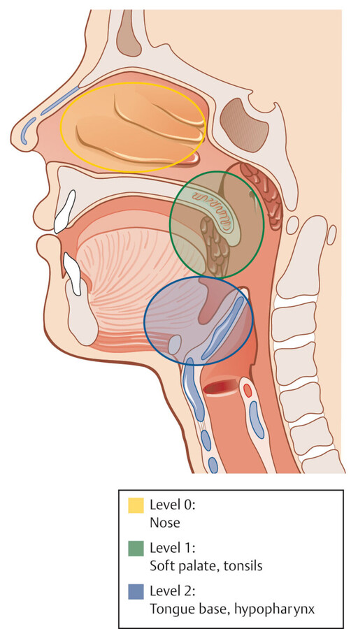
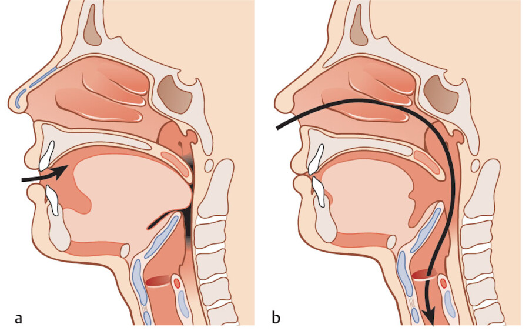

Ронхопатия и синдром обструктивного апноэ сна
Определение и классификация
Храп, ронхопатия (греч. ronchus — храпение, хрипы) — звуковой феномен, возникающий в результате вибрации орофарингеальных структур как на вдохе, так и при выдохе, является следствием изменения конфигурации (неполной обструкции) верхних дыхательных путей от носоглотки до гортанной части глотки. Храп является основным симптомом синдрома обструктивного апноэ/гипопноэ во сне (СОАГС) и характеризуется повторными эпизодами обструкции верхних дыхательных путей во время сна, приводящими к снижению уровня кислорода в крови, грубой фрагментации сна и избыточной дневной сонливости. Диагноз СОАГС может быть поставлен в случаях, когда эпизоды апноэ длятся не менее 10 с и возникают не реже чем 15 раз за один час. В МКБ-10 есть отдельная графа — апноэ сна G47.3. по: Нац. руководство, 2016, с. 890–891
По клиническим признакам причины таких расстройств можно разделить на три категории:
- первичный храп (доброкачественный храп, храп без апноэ): громкий храп может вызвать напряжённую обстановку в окружении пациента, не сказываясь отрицательно на физическом его состоянии;
- синдром обструктивных апноэ во сне встречается примерно у 4% мужчин и 2% женщин; он характеризуется повторными эпизодами обструкции верхних дыхательных путей во время сна с прерыванием дыхательных движений и связан с обеднением периферической крови кислородом (десатурацией), что повышает риск сердечно-сосудистых нарушений — инсульта, инфаркта миокарда, гипертонического криза, атеросклероза — и смерти от них;
- синдром резистентности верхних дыхательных путей — форма обструктивных расстройств дыхания во сне, при которой повторные эпизоды повышения сопротивления потоку воздуха в верхних дыхательных путях вызывают короткие пробуждения от сна и связанную с этим дневную сонливость.
по: Нац. руководство, 2016, с. 892
Немецкое руководство определяет тяжесть по индексу апноэ-гипопноэ (ИАГ) — числу апноэ и гипопноэ за час сна: у взрослых синдром обструктивного апноэ сна диагностируют при ИАГ 15 и более или при ИАГ 5 и более в сочетании со значимыми сопутствующими заболеваниями; у детей — при ИАГ более 1 в сочетании с клиническими симптомами (храп, затруднённое дыхание во сне, дневная сонливость или гиперактивность, нарушения поведения и обучения); первичный храп — ИАГ менее 5 или менее 15 без значимых сопутствующих заболеваний. по: Behrbohm и соавт., разд. 3.3.10
Эпидемиология
Если СОАГС встречается у 26–73% пациентов, а в 95% случаев у пациентов с СОАГС встречается храп, то принято считать, что храп является его объективным симптомом. По другим данным, распространённость СОАГС велика и составляет 5–7% в популяции старше 30 лет, причём приблизительно треть таких пациентов имеет среднюю или тяжёлую степень заболевания. Чаще СОАГС страдают люди старше 40 лет, соотношение мужчин и женщин 8:1. У женщин СОАГС развивается после климактерического периода. У детей важным фактором риска СОАГС является затруднение носового дыхания, обусловленное гипертрофией аденоидных вегетаций и нёбных миндалин. У больных с СОАГС мягкое нёбо вибрирует с частотой 1000–3000 Гц, а у пациентов с храпом без апноэ — 40–60 Гц. по: Нац. руководство, 2016, с. 891
Этиология и патогенез
Основное место обструкции соответствует сегменту между хоанами и гортанью. Этот сегмент открывается для воздушного потока только благодаря работе произвольных мышц. По мере углубления сна тонус мышц снижается, и у больных с апноэ сна возникает дисбаланс между разрежением на вдохе (присасывающий эффект) и мышечным тонусом. Спадение дыхательных путей усугубляется давлением окружающих тканей, которое во многом определяется отложением жира при ожирении или анатомическими особенностями (гиперплазия нёбных миндалин, мягкого нёба, корня языка); поскольку ожирение распространено широко, его считают основным кофактором патогенеза СОАГС. по: Behrbohm и соавт., разд. 3.3.10
С позиций оториноларинголога наиважнейшим представляется патогенетическая роль затруднённого носового дыхания в развитии храпа и СОАГС. Так, около 50% больных, страдающих от храпа, жалуются и на затруднённое носовое дыхание, в то время как в общей популяции этот показатель составляет лишь 14%. С другой стороны, 2/3 пациентов с искривлением перегородки носа храпят во сне в отличие от 1/4 лиц в ринологически здоровой популяции. по: Нац. руководство, 2016, с. 893
Оториноларингологу важно определить причины затруднения носового дыхания, к которым можно отнести:
- со стороны наружного носа и носоглотки — деформации наружного носа и его перегородки, хронические риниты, хронические воспалительные заболевания носа и околоносовых пазух, сумка Торнвальдта, гипертрофия тубарных валиков, утолщение в области задних отделов сошника в результате гипертрофии слизистой оболочки или наличия костной пневматизации;
- со стороны глотки — дряблость мягкого нёба и его гипертрофия, увеличение аденоидных вегетаций и нёбных миндалин, утолщение нёбных дужек, увеличение длины нёбного язычка, гипертрофия язычной миндалины;
- со стороны гортаноглотки — увеличение корня языка, пролапс надгортанника, смещение подъязычной кости, гиперпластические процессы в гортани.
по: Нац. руководство, 2016, с. 895

Клиническая картина
Клинические проявления СОАГС достаточно разнообразны. В 95% случаев у пациентов с СОАГС имеется храп. Основные клинические симптомы данного заболевания следующие:
- громкий храп;
- остановки дыхания во сне;
- беспокойный сон;
- учащённое ночное мочеиспускание;
- ночные приступы удушья;
- ночные поты;
- утренняя головная боль;
- снижение потенции;
- бессонница;
- повторные просыпания;
- ночной кашель.
по: Нац. руководство, 2016, с. 894
Для выявления остановок дыхания во сне проще всего понаблюдать за спящим. Обычно сразу после засыпания у больного появляется храп и вскоре внезапно останавливается дыхание. В это время не слышно дыхательных шумов, а храп прекращается. Однако больной пытается дышать, что видно по движениям грудной клетки и брюшной стенки. Примерно через 15–30 с человек громко всхрапывает и делает несколько глубоких вдохов и выдохов. по: Нац. руководство, 2016, с. 894
Диагностика
Диагноз основывается на типичных анамнестических данных, в том числе сведениях о количестве эпизодов засыпаний в дневное время, результатах клинического обследования и лабораторного исследования сна (индекс апноэ, гипопноэ и пробуждений).
«Золотым стандартом» диагностики СОАГС является полисомнография, проводимая в отделениях медицины сна. При этом регистрируются электроэнцефалограмма, электромиограмма, движение нижних конечностей, электрокардиограмма, храп, носо-ротовой поток воздуха, дыхательные движения грудной клетки и брюшной стенки, положение тела, сатурация (SpO2). Кардиореспираторный мониторинг характеризуется тем, что регистрируются только дыхательные каналы, сатурация, пульс, ЭКГ. Респираторный мониторинг применяется для скрининга пациентов с расстройствами дыхания во сне: прибор регистрирует апноэ, гипопноэ, храп и сатурацию.
Клиническая картина синдрома центрального апноэ сна (дыхание Чейна — Стокса — циклические остановки дыхания) близка к картине СОАГС. Если при циклических апноэ/гипопноэ регистрируется храп, всегда следует предполагать наличие СОАГС. Если остановки дыхания регистрируются только в положении на спине, то, скорее всего, они носят обструктивно-зависимый характер. «Чистое» дыхание Чейна — Стокса следует предполагать только в том случае, если остановки дыхания регистрируются в любом положении тела, при этом не отмечается дыхательных усилий, а в вентиляционную фазу полностью отсутствует храп. Наличие у пациента тяжёлой сердечной недостаточности, инсультов или тяжёлых травм головы в анамнезе с большей вероятностью указывает на возможность дыхания Чейна — Стокса. CPAP-терапия полностью устраняет СОАГС, но практически не влияет на центральное апноэ сна. по: Нац. руководство, 2016, с. 894, 896–897
Консервативное лечение
Методы консервативного лечения могут улучшить общее состояние больного, снизить выраженность храпа и проявлений СОАГС, если они будут направлены на устранение факторов риска. Снижение массы тела: при неосложнённом храпе достаточно уменьшить массу тела на 5–7% для того, чтобы полностью устранить храп. Курение вызывает химическую травму дыхательных путей, что ведёт к её отёку и снижению тонуса мышц глотки. Алкоголь действует как миорелаксант, что приводит к расслаблению глоточной мышцы и спадению дыхательных путей; при тяжёлой форме СОАГС приём значительных доз алкоголя ведёт к риску летального исхода. Пациент лёжа на боку может практически не храпеть. Применение внутриротовых приспособлений, предназначенных для смещения нижней челюсти кпереди, ведёт к уменьшению храпа. Если мышцы языка, нижней челюсти и глотки тренированы, то во сне они поддерживают определённый тонус, обеспечивая просвет глотки и уменьшение храпа. по: Нац. руководство, 2016, с. 891–892

Немецкие авторы подчёркивают, что эффективного лекарственного лечения ни синдрома обструктивного апноэ сна, ни первичного храпа пока нет. Принцип CPAP-терапии — пневматическая поддержка верхних дыхательных путей постоянным положительным давлением; первоначальный успех близок к 100%, однако 30–40% больных затем прекращают лечение из-за побочных эффектов. Внутриротовые устройства, выдвигающие нижнюю челюсть вперёд, эффективны примерно у 70% больных с лёгкой формой. по: Behrbohm и соавт., разд. 3.3.10
Хирургическое лечение
Среднетяжёлые и тяжёлые формы СОАГС следует рассматривать как абсолютное показание к устранению носовой обструкции (искривление перегородки носа, гипертрофия носовых раковин, аденоидные вегетации II–III степени, гипертрофия нёбных миндалин и др.). При тяжёлых формах СОАГС у больных с ожирением улучшение наблюдается у 20–30% оперированных лиц. Решение о хирургическом лечении храпа и СОАГС принимается высококвалифицированным специалистом с учётом данных клинического осмотра, результатов полисомнографии и других дополнительных методов обследования. по: Нац. руководство, 2016, с. 892
Таблица 1. Хирургическое лечение храпа и СОАГС по уровням обструкции (по тексту национального руководства, с. 898–899)
| Уровень | Вмешательство | Результат по данным руководства |
|---|---|---|
| Нос и околоносовые пазухи | Септопластика, пластика носовых раковин, полисинусотомия, полипотомия — восстановление свободного носового дыхания | Уменьшение храпа примерно у 40% пациентов; стойкого излечения от СОАГС не удаётся получить ни у одного больного |
| Носоглотка и нёбные миндалины у детей | Сочетанная тонзиллэктомия и аденотомия | Стойкий эффект при СОАГС в 85–90% случаев |
| Мягкое нёбо (второй уровень) | Тонзиллэктомия, увулопалатофарингопластика; при первичном храпе и лёгком СОАГС — радиочастотная абляция мягкого нёба | Улучшение у 50% больных с СОАГС и у 70% больных первичным храпом |
| Язык (третий уровень) | Радиочастотное воздействие на корень языка; подвешивание подъязычной кости; удаление язычной миндалины лазером или радиоволновой энергией | Излечение в 33% случаев при лёгком и умеренно выраженном СОАГС (радиочастотное воздействие) |
| Челюсти | Максилломандибулярная транспозиция путём остеотомии | Эффективна у 90% оперированных |
Немецкое руководство приводит те же уровни операций, но для увулопалатофарингопластики указывает тенденцию к улучшению более чем у 60% больных с синдромом обструктивного апноэ сна и стойкое улучшение более чем у 70% больных первичным храпом. Перед операцией помогает эндоскопия во сне, вызванном седацией: она показывает уровень, характер и степень спадения дыхательных путей. Среди новых методов — стимуляция подъязычного нерва имплантируемым генератором импульсов. по: Behrbohm и соавт., разд. 3.3.10
Следует отметить, что на сегодняшний день нет ни одного гарантированного метода лечения храпа и апноэ. Ронхопатия — многофакторное заболевание, и, значит, лечение должно носить многоплановый характер. Выбор методов лечения зависит от причины храпа и СОАГС, степени тяжести нарушений дыхания во сне. Срок общей нетрудоспособности больного составляет около 3 нед. по: Нац. руководство, 2016, с. 899
Источники
- Оториноларингология: национальное руководство / под ред. В. Т. Пальчуна. — 2-е изд., перераб. и доп. — М.: ГЭОТАР-Медиа, 2016. — Гл. 13, раздел «Ронхопатия» (Красножен В. Н.): с. 890–899.
- Behrbohm H., Kaschke O., Nawka T., Swift A. Ear, Nose, and Throat Diseases with Head and Neck Surgery. — Stuttgart: Thieme. — Разд. 3.3.10 «Obstructive Sleep-Related Breathing Disorders» (Verse T.), рис. 3.66, 3.67.
Раздел «Учебник» — справочная теория, не клинические рекомендации. Тактика ведения пациента — по разборам КР.